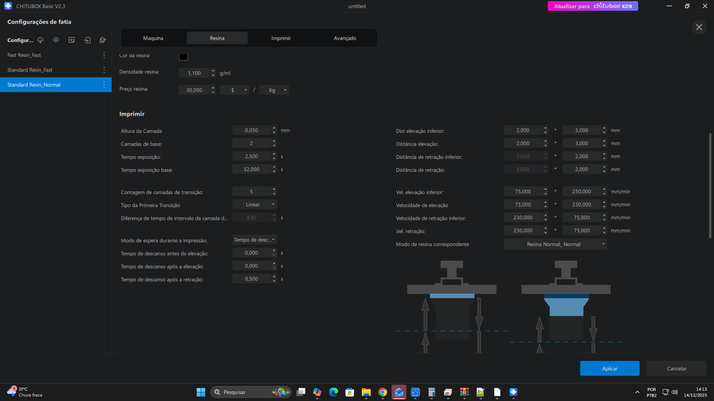
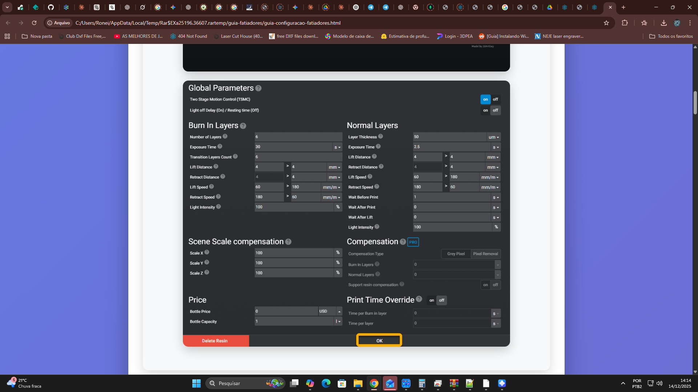

Entenda CADA parâmetro do Chitubox e como ele afeta sua impressão:
Velocidade de Elevação (Lift Speed) é o parâmetro que MAIS causa falhas!
Se sua impressão quebra no meio do processo, o problema é quase sempre lift speed muito alto para aquela resina.
Resinas com alta rigidez (ABS-Like, Tough, Engineering): Use 40-60mm/min
Resinas normais (Standard): Use 60-80mm/min
Resinas flexíveis: Use 80-100mm/min

Entenda CADA parâmetro do Lychee Slicer e como ele afeta sua impressão:
Chitubox: Mais simples e direto. Melhor para iniciantes.
Lychee: Mais opções avançadas (TSMC, compensação). Melhor para usuários experientes.
Ambos produzem resultados excelentes quando configurados corretamente!